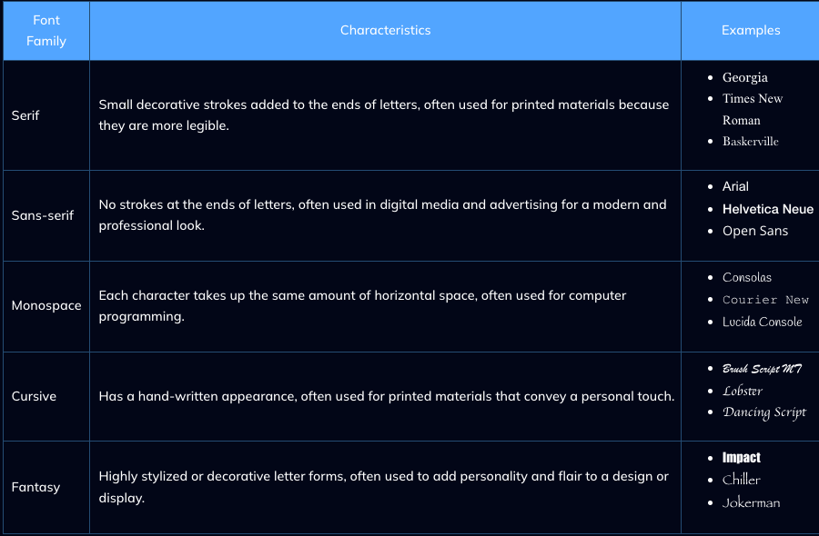
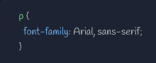
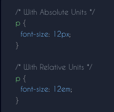
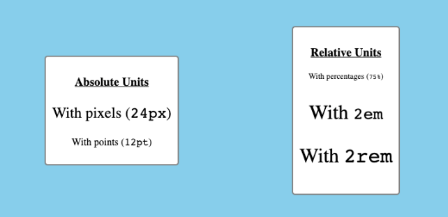
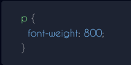

Fonts are one of the most heavily-used properties for styling. They can improve readability and further express a page's tone and feeling.
In CSS there are five generic font families:
Serif
Sans-serif
Monospace
Cursive
Fantasy
These fonts are considered to be "web-safe" because they are supported in most major web browsers.
These are the font families and an example of each:

To assign these families with CSS, use the font-family property:

It is good practice to always include a generl font name after the desired font name. This is so that the browser can fall back to something if need be.
# Font Properties
Outside of font-family there are other CSS properties that can be used to style fonts.
The font-size property sets how big the text of a given element should be on the page. It can either be done with absolute units (px, pt, etc...) or relative units (percentages, em, rem, etc...)
This property can be applied to any element that features text content, such as paragraphs:

This image showcases a few more examples of using the font-size property:

The font-size property should be applied in an accessible way. This means avoiding absolute units when possible and not making paragraph text as large as header text (or vice versa).
The font-weight property to set the default "thickness" of a given element's text.
This property uses either keyword values (i.e. lighter and bolder), or numeric values (i.e. 100 and 800):

If we use numeric values for the font-weight property, remember this:
Anything less than 400 makes the font thinner or lighter.
The 400 - 700 range is considered "normal" for most fonts.
Anything above 700 usually makes the font bolder.
Despite these range, not all font families are affected the same way by the font-weight property. For instance, if a given font is already bold to begin with, an increased font-weight might have little to no effect.